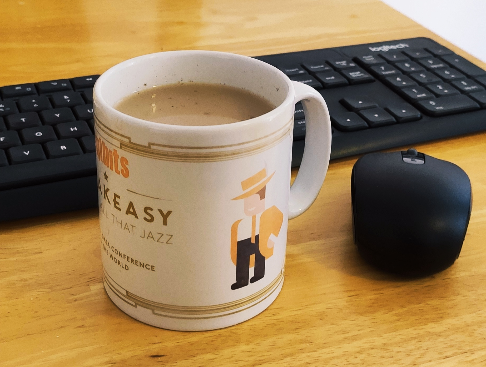

Hi, I am Magda and this is my first blog post. I have seen #TSQL2SDAY invitation from Elizabeth Noble (blog | twitter) for September and thought I would give it a try. I am going to tell you about my adventures in improving things at work.
Intro
As a non-technical worker, I can't do changes on my own in the Calculating Program that I and my team used at a daily basis, but I could give an idea, project or draft and someone who do it for me, and my thought becomes a tool. So it was my impact to make my and my team's work easier and faster.
I am terrified of doing reports and calculations manually, also doing repetitive and time-consuming things is terrible. When I do something again and it takes a long time, I can forget about one step. In my profession, forgetting about something can have serious consequences. When I do something for a client, it has to be transparent and formatted in the same way – always. And I wish that client after opening my file does not return it and ask me to replace the dot with a comma or to verify the subtotals.
PDF to Excel
The first task that I came up with in my new job was to review all visible and used reports in the Calculation Program that we used and change them as possible it was to the Excel file, where data have proper rows and columns with exact name and value. What a relief it was for me and my team when no one anymore was waiting for generating the PDF file, and copying text side by side to the Excel spreadsheet and deleting empty rows and headers. And the time that we saved could be spent on an extra cup of tea. Additional thing was that the number of visible reports decreased to a necessary minimum and only the used ones were available, which made the Program interface easier to use and it was faster to select a needed report from the list.
Excel Macros
The second time saver thing that I came up with was for the monthly audit of the calculations for which I was responsible. The verification consisted of copying and pasting the formulas from lines to lines under the fragment of the analysed area and checking if my calculations were consistent with what the program calculated. I registered a macro that copied and pasted the table containing the calculation formulas with one keyboard shortcut, thanks to which the monthly control always looked the same way and was clear. Using this process I was able to find a few important incorrect values that were fixed in time. Thanks to this, I saved my time, time and nerves of my manager!
Conclusion
I think in any profession, it is possible to make some things easier and faster for myself and for others, but you have to be just a little bit lazy. Such laziness rewards an additional cup of tea.
Thank you for reading,
Magda
